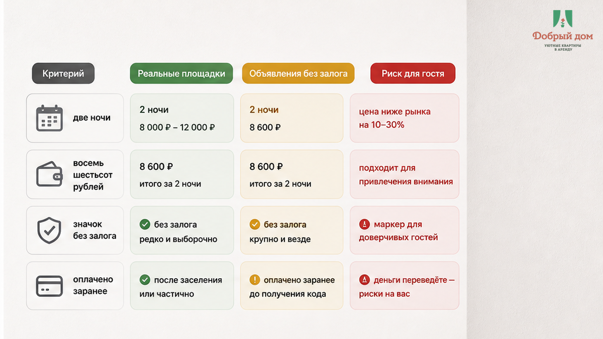
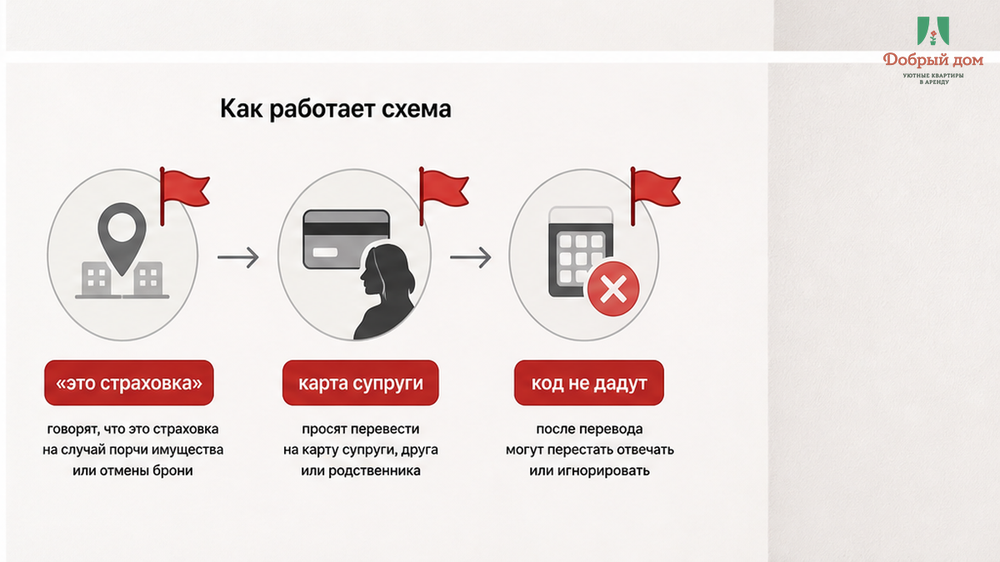
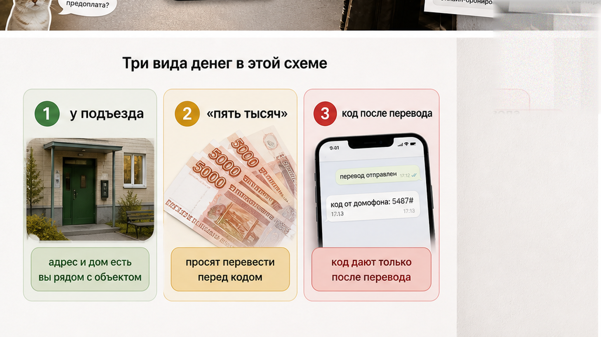
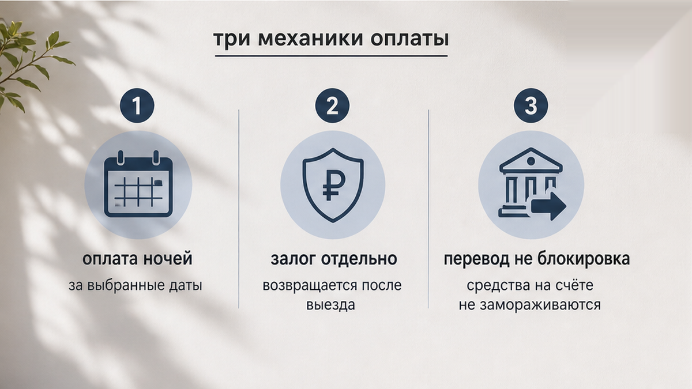
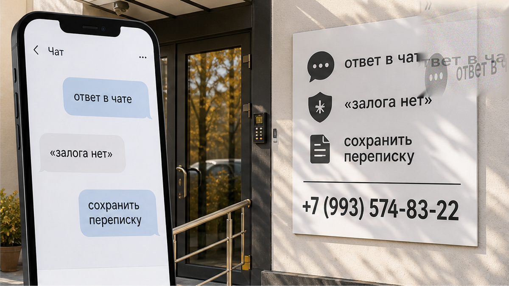
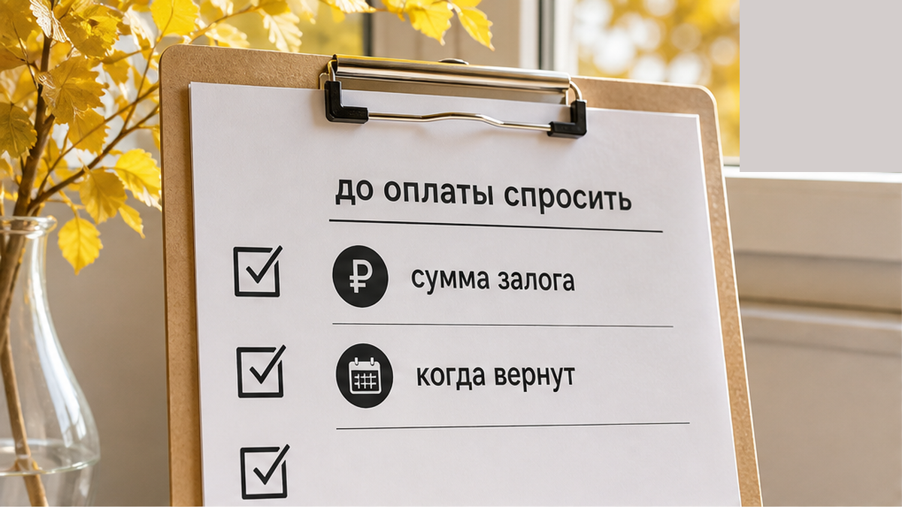
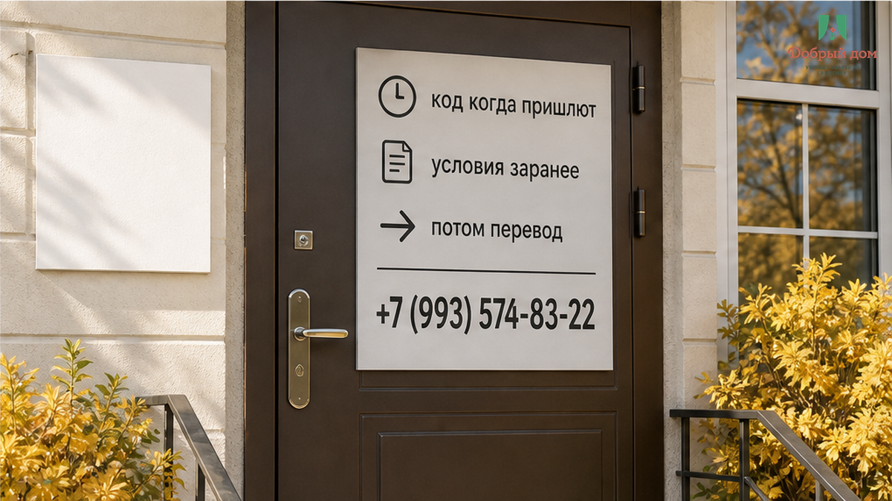

«Переведите пять тысяч — потом пришлю код». Гость читает это уже у подъезда: после поезда, с чемоданом, в чужом дворе. Две ночи стоили 8 600 ₽, они оплачены заранее. В карточке жилья был значок «без залога». Для гостя это означало просто: сумма за проживание известна, больше доплачивать не придётся.
Но в чате появляется другое условие. «Это не залог, а страховка». «Переведите на карту супруги». «Без перевода код не выдам». И спор здесь не о пяти тысячах как таковых. Спор о том, почему условие, которого не было до оплаты, возникло в тот момент, когда человек уже приехал и доступ в квартиру зависит от кода.
Случай выше — редакционный, собирательный. Это не история конкретного гостя и не тариф «Доброго дома». Сумма 5 000 ₽ здесь приведена для наглядности. Но сама механика знакомая: в карточке — «без залога», перед кодом — перевод на личную карту.
Я хост посуточной в Тюмени. Это «Добрый дом». Telegram · MAX

Значок в объявлении помогает выбрать жильё, но не заменяет переписку об условиях. Его мог поставить хозяин, он мог относиться к другому формату брони или просто не объяснять, что именно подразумевается. Гость видит «без залога» и логично думает: отдельного депозита не будет. Хост может вкладывать иной смысл: «не берём наличные», «не берём при бронировании», «обсудим перед заселением». Вот в этом разрыве и начинается неприятный вечер.
Особенно если жильё нашли на площадке, а платить предлагают уже напрямую в мессенджере. Правила витрины работают внутри той сделки, которую вы оформляете на витрине. Если деньги ушли человеку в личный чат, рассчитывать только на красивую карточку уже поздно.
До оплаты ночей нужен один прямой вопрос: «Отдельный залог есть? Какая сумма, когда и как возвращается?» Если залога нет — попросите написать это текстом. Не голосовым, не «не переживайте», не фразой у двери. Одна строка в переписке иногда важнее десяти обещаний.


Предоплата за две ночи — это деньги за проживание. В нашем примере это 8 600 ₽. Страховой депозит — отдельная сумма на случай ущерба, которую должны вернуть после выезда, если с квартирой всё в порядке. Блокировка на карте — ещё другой механизм: деньги не переводятся получателю, а временно удерживаются банком.
Когда у подъезда просят «скинуть 5 000 ₽», это не блокировка. Это перевод человеку. А значит, важно не название — «страховка», «бронь», «гарантия» — а то, что было согласовано до платежа и как обещан возврат.
Сам по себе депозит не делает хозяина мошенником. И 5 000 ₽ сами по себе ничего не доказывают: это не универсальная норма и не автоматический признак обмана. Тревожит другое: в карточке написано «без залога», деньги за ночи уже получены, а новый перевод требуют как условие доступа.



Бесконтактное заселение — обычная практика. Код после подтверждения оплаты — тоже. Но порядок должен быть известен заранее. Если хозяин решил, что сначала нужен депозит, он обязан сказать об этом до того, как гость оплатил проживание и сел в поезд.
У двери у человека мало пространства для решения. Искать другой вариант с сумками трудно, спорить после дороги тяжело, а время работает против гостя. Поэтому фраза «переводите сейчас, иначе код не дам» давит сильнее, чем кажется со стороны.
код до залога или залог до кода — вы это спрашивали до перевода?
Вот вопрос, который может сэкономить и деньги, и нервы. А если такая переписка уже случилась, напишите в Telegram или MAX: посмотрим, что именно было обещано в карточке, что написано в чате и в какой момент появилось новое условие.
Не путайте этот случай с другими проблемами посуточной аренды. Бывает, что депозит уже перевели, а на выезде его не возвращают — это отдельный спор о залоге после проживания. Бывает тишина после предоплаты на личную карту — там человек вообще перестаёт отвечать в чате: история про предоплату и молчание. Иногда код есть, но подъезд не открывается: домофон молчит, хотя код прислали. А иногда дополнительный шаг появляется уже после оплаты и задерживает доступ: код придерживают после нового требования.
Здесь ситуация уже: «без залога» в карточке против перевода перед кодом. И это надо решать не эмоцией у двери, а заранее зафиксированными условиями.

Нет. Так не заселяем. Условия должны появляться до оплаты: стоимость ночей, отдельный депозит, способ его передачи, срок возврата и момент отправки кода. Не потому, что все друг другу обязаны доверять на слово. А потому, что ясные правила защищают обе стороны.
Сначала проверка, потом перевод. Не наоборот. Спросить занимает несколько минут. Перевести деньги под давлением — несколько секунд. Но вернуть контроль над ситуацией после такого перевода гораздо сложнее.
«Добрый дом» — посуточные квартиры в Тюмени.
Условия, порядок заселения и возможный депозит обсуждаем до оплаты: Telegram · MAX
Бронирование: добрыйдом-72.рф/booking · Сайт: добрыйдом-72.рф
Телефон: +7 (993) 574-83-22 · Менеджер: @Dobriy_dom_Tyumen